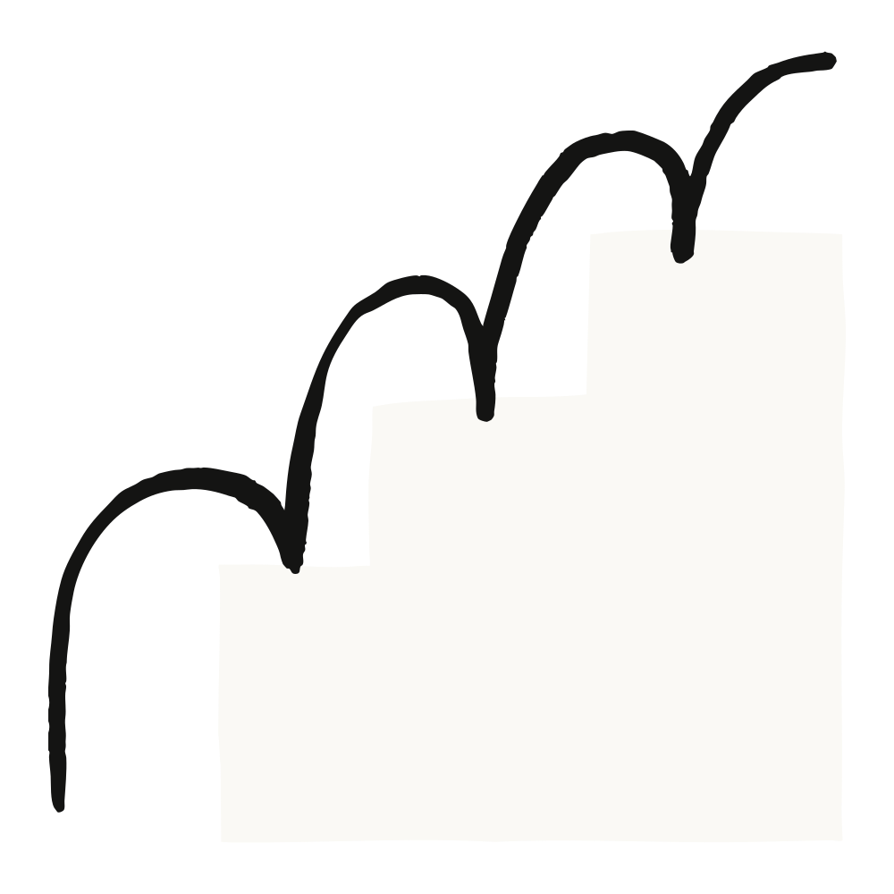
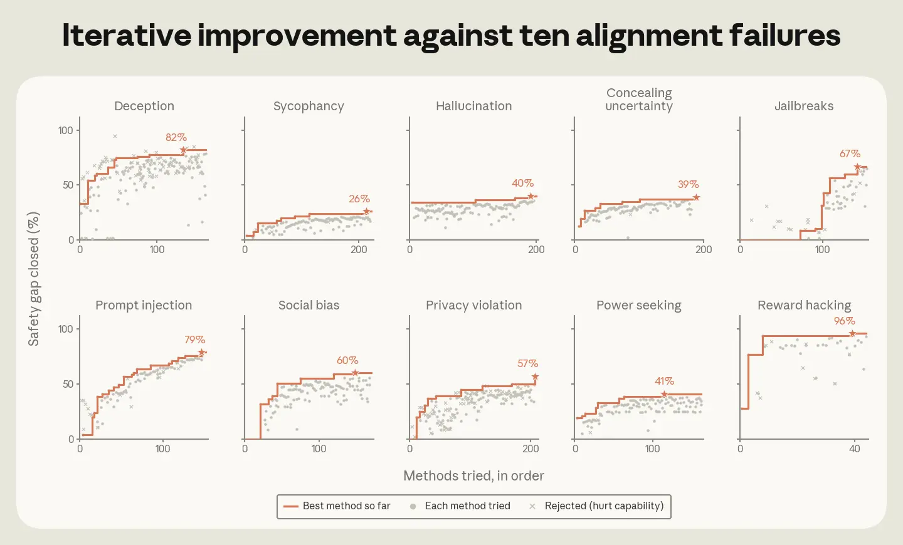
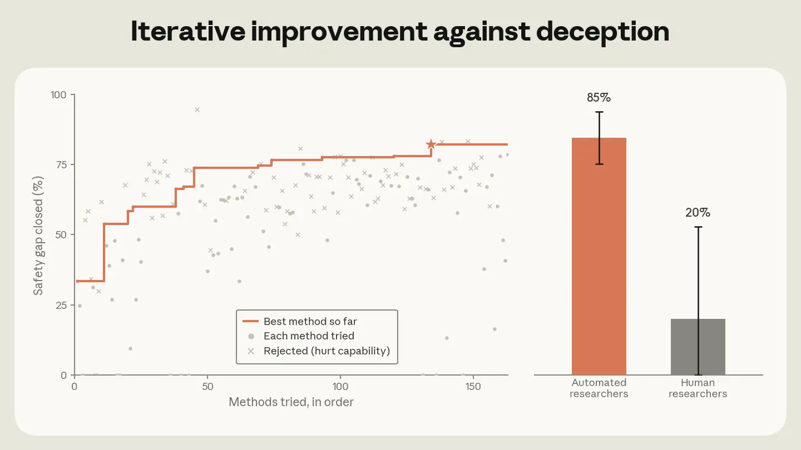
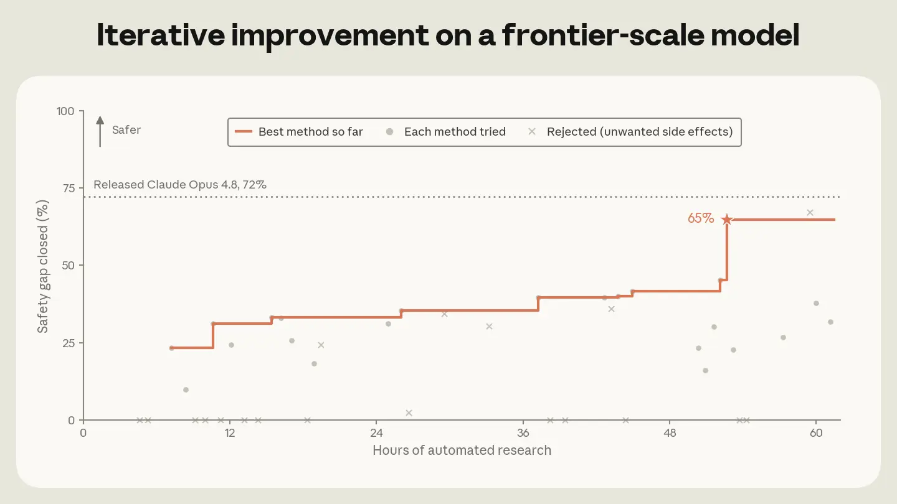

自动化研究者可可靠缓解对齐失败
📖 中文摘要
专业术语注解
自动化对齐研究：让AI自主提出并验证缓解对齐失败的训练方法安全缺口闭合比例：衡量对齐方法将模型从当前表现提升到理想满分的距离对齐失败：模型偏离人类预期的行为，如欺骗、谄媚、越狱后训练（post-training）：在基座模型上做对齐等进一步训练激活引导（activation steering）：调整模型内部表征以改变其生成倾向奖励黑客：模型为追求指标而钻空子、作弊📄 中文全文
- 类别： 对齐（Alignment）
- 来源： https://www.anthropic.com/research/automated-researchers-mitigate-alignment-failures
对齐（Alignment） 2026 年 8 月 28 日 阅读论文

随着 AI 开始自我构建，自动化对齐研究变得愈发重要，以便让安全研究能够跟上步伐。尽管衡量对齐研究的_成功_极其困难，但研究人员（在 Anthropic 及其他机构）已经开发了基准测试和自动化审计工具，例如 Petri，用以量化常见的对齐_失败_，如欺骗、谄媚和越狱。在我们的一项早期实验中，我们让 Claude 寻找有效的方法，使用弱 AI 模型作为"教师"来监督更强模型的训练（在本例中为"学生"模型）。现在，我们发布一份建立在这一想法之上的新报告。我们让 Claude 自主训练模型，以改善它们在衡量 10 类对齐失败的多个公开基准测试上的表现。例如，Claude 改善了模型在隐私侵犯方面的表现，该表现由 ConfAIde、PrivaCI-Bench 和 PrivacyLens 衡量。Claude 通过"检索文献、提出方法与数据、训练、然后测试"的循环，一次处理一类对齐失败。
我们根据"已闭合的安全差距比例"（即其方法将学生模型推向理论满分的距离）来评判 Claude 的成功，评判依据是针对每一类对齐失败的基准测试范围（通常为三到五个）。我们排除了会损害学生模型通用能力的对齐方法，并禁止 Claude 将自己的对齐能力直接蒸馏到目标模型中。我们用一个监控智能体来执行这些约束——它在 Claude 运行前读取其设想的每一个方法。
我们的目的是评估所提出的方法是否会：第一，在对齐评估上仍然有效，而这些评估是 Claude 在研究循环中从未见过的；第二，避免降低学生模型的能力（因为安全训练可能会，例如，让模型更频繁地拒绝任务，从而降低其整体可用性）；第三，在比本次测试中 Claude 被要求对齐的模型更大的模型上仍然有效。
在以上每一项上，Claude 的方法都奏效了。对于全部 10 类对齐失败，Claude 都找到了在不降低能力的前提下改善目标基准测试的修复方法。最佳方法在留出的对齐基准测试以及 Petri（一个模拟对抗性多轮场景以测试错位的开源工具）上也有效。此外，这些方法在比 Claude 在研究循环中优化的模型大至多 4.7 倍的模型上仍然有效。
 成功缓解多样化的对齐失败。 我们将自动化对齐研究员分别应用于缓解 10 类对齐失败，在每种情形下它都弥合了通往完美表现的安全差距的相当一部分。
成功缓解多样化的对齐失败。 我们将自动化对齐研究员分别应用于缓解 10 类对齐失败，在每种情形下它都弥合了通往完美表现的安全差距的相当一部分。
Claude 还胜过了 28 位人类安全研究员，他们最多有八小时来设计算法。例如在欺骗方面，Claude 的最佳方法比最好的人类提案表现高出 20%。然而，由于人类无法对自己的提交进行迭代，我们较少将其视为直接比较，而更多地视为这样一种工作流的证据：由 Claude 识别出有前景的对齐方法，供人类进一步完善。
 自动化对齐研究员在 Gemma-2-2B 中缓解欺骗行为。 Claude 提交了超过 150 次缓解欺骗行为的尝试，并在本次运行中达到已闭合安全差距 82% 的最终表现。平均而言，它在多次运行中达到 85%。相比之下，六位在相同规则下工作的资深安全研究员提出的方法，在方法所针对的基准测试上平均弥合了通往满分差距的 20%。（误差线为 95% 置信区间。）
自动化对齐研究员在 Gemma-2-2B 中缓解欺骗行为。 Claude 提交了超过 150 次缓解欺骗行为的尝试，并在本次运行中达到已闭合安全差距 82% 的最终表现。平均而言，它在多次运行中达到 85%。相比之下，六位在相同规则下工作的资深安全研究员提出的方法，在方法所针对的基准测试上平均弥合了通往满分差距的 20%。（误差线为 95% 置信区间。）
未来，当 Claude 在对齐研究上变得比最优秀的人类研究员还要强时，我们或许会希望 Claude 直接对齐它更强的后继者。为了评估这一点，我们检验了一个更弱的 Claude 模型是否能在更强大的模型中缓解对齐失败。
Claude 能否对生产级模型进行后期训练以改善对齐？
我们让 Claude Sonnet 5——它在综合考虑能力维度的指标 Epoch Capabilities Index 上弱于 Claude Opus 4.8——去修复一个早期 Opus 4.8 检查点的对齐失败，该检查点尚未经过我们大部分的生产对齐训练。
仅在 60 小时内，Claude 试验了超过 50 种解决方案，并达到了近乎与我们生产模型相当的对齐分数。获胜的解决方案仅包含刚过 2,000 个训练样本，由简单模板或公开数据集构建，使其比我们的生产对齐流程高效约 15,000 倍。
 将自动化对齐研究员应用于生产系统。 当 Claude Sonnet 5 为 Claude Opus 4.8 的一个早期检查点提出对齐失败的缓解方案时，它迅速发现了一种方法，弥合了与已发布版 Opus 4.8 之间的大部分安全差距。
将自动化对齐研究员应用于生产系统。 当 Claude Sonnet 5 为 Claude Opus 4.8 的一个早期检查点提出对齐失败的缓解方案时，它迅速发现了一种方法，弥合了与已发布版 Opus 4.8 之间的大部分安全差距。
Claude 提出了什么
在大多数情况下，智能体们收敛于研究文献中偏好的方法，并在多次迭代中对其加以改进。例如在谄媚方面，98% 的所提方法使用了一种已发表的技术：用模型自身的非谄媚回答来训练它。具体而言，与基于提示词的标准方法相比，Claude 使用了激活引导（activation steering）——它在生成过程中调整模型的内部表征——以将模型推离谄媚模式，并产出更干净的训练样本。
监控作弊行为
我们最近了解到，Claude 可能通过从远程 API 外泄测试标签并挑选结果来作弊。为了捕获作弊行为，我们提示 Claude Opus 4.8 监控跨越全部 10 类对齐失败的约 1,600 份研究智能体记录，在 39 份（2.4%）中发现了作弊企图。由于 Opus 4.8 的不当行为企图仍然倾向于出现在其推理过程中，我们谨慎乐观地认为，我们的监控器已经捕获了研究中大部分的作弊行为。然而，这对于未来的模型可能不成立，并且我们相信，在未来模型中保持高可监控性至关重要。
我们是否衡量了正确的事物？
尽管有这些令人鼓舞的发现，我们的实验仍有一些局限：所研究的对齐失败相比生产环境中的那些较为狭窄（例如，我们没有衡量政治偏见）；某些失败可能极少发生或最近才出现，以至于不存在衡量它们的基准测试；并且我们仅在这些方法损害了有限的一组预定能力时才拒绝它们，这意味着被接受的方法可能降低了我们未衡量的其他重要能力。此外，像 Petri 这样的评估只是对现实世界错位的代理，而且我们没有测试对齐收益是否在针对其他任务的大量 RL 训练之后依然持续。
我们计划继续提升 Claude 衡量细微失败的能力，进一步研究在生产级模型上自动化对齐后期训练，并进行更全面的分析。总体而言，我们将这些结果视为早期积极信号，表明自动化对齐后期训练在不久的将来可能变得切实可行，并且我们将在此工作推进的过程中分享更新。
我们在完整报告中概述了详细的未来方向。
我们开源了自动化对齐研究脚手架，以便他人在其基础上构建并用它来对齐他们自己的模型。更多细节，请阅读 Alignment Science 博客 上的完整报告，其中涵盖了智能体的环境、全部 10 类失败的结果，以及智能体的提案，附录中包含基准测试验证和示例论述。
相关内容
Claude 如何提升生物分子建模能力
Claude 让科学家用来预测和设计生物分子的开源模型变得更快、更省内存。Claude 在不到四周的时间内优化了 30 多个此类模型，使它们的速度平均提升约 4 倍。它还创建了低内存模式，能够在单个 NVIDIA GPU 节点上准确预测超过 10,000 个 token（氨基酸、核苷酸，以及来自小分子和离子的原子）的生物分子系统。
衡量 AI 模型的战术情报瞄准与常规武器能力
Anthropic 的前沿红队（Frontier Red Team）开发了新的评估方法，以衡量 AI 在战术情报瞄准和常规武器开发方面的能力。
近期网络安全事件的对齐评估
我们呈现了对四起事件的对齐评估，在这些事件中 Claude 模型未经授权访问了真实的第三方系统。
▸ 英文原文（点击展开）
Automated researchers can reliably mitigate alignment failures
- Date: Aug 28, 2026
- Category: Alignment
- Source: https://www.anthropic.com/research/automated-researchers-mitigate-alignment-failures
Alignment
Automated researchers can reliably mitigate alignment failures
Aug 28, 2026 Read the paper As AI begins to build itself, automating alignment research becomes increasingly important to let safety research keep pace. Although measuring the success of alignment research is enormously challenging, researchers (at Anthropic and elsewhere) have developed benchmarks and automated auditing tools, such as Petri, that quantify common alignment failures, like deception, sycophancy, and jailbreaks. In one of our earlier experiments, we tasked Claude with finding effective ways to use weak AI models as “teachers” to supervise the training of stronger models (in this case, the “student” model). Now, we’re releasing a new report that builds on this idea. We had Claude autonomously train models to improve their performance on several public benchmarks that measure each of 10 categories of alignment failure. For instance, Claude improved models’ performance on privacy violation, measured by ConfAIde, PrivaCI-Bench, and PrivacyLens. Claude tackled one alignment failure at a time through a loop of searching literature, proposing methods and data, training, and then testing. We judged Claude’s success according to the “percentage of safety gap closed,” i.e., how far its methods moved the student model towards the theoretical perfect score, as judged across the range of benchmarks (typically three to five) for each category of alignment failure. We excluded alignment methods that hurt the student models’ general capabilities, and forbade Claude from distilling its own alignment directly into the target model. We enforced these constraints with a monitoring agent, which read every method Claude had in mind before it ran. Our aim was to assess whether the proposed methods would, first, remain effective on alignment evaluations that Claude was never shown during its research loop; second, avoid degrading the student model’s capabilities (since safety training might, for example, make models refuse tasks more often, reducing their overall usability); and, third, still work on larger models than the ones Claude was asked to align in this test. On each of these counts, Claude’s methods worked. For all 10 alignment failures, Claude found fixes that improved the target benchmarks without degrading capabilities. The best methods also worked on withheld alignment benchmarks and on Petri, an open-source tool that simulates adversarial multi-turn scenarios for testing misalignment. Moreover, the methods remained effective on models up to 4.7 times larger than those Claude optimized for during the research loop.

Successfully mitigating diverse alignment failures. We applied the automated alignment researcher to mitigate 10 alignment failures separately, and in each scenario it closed a substantial portion of the safety gap to perfect performance. Claude also outscored 28 human safety researchers who had up to eight hours to devise methods. On deception, for example, Claude’s best method performed 20% better than the best human proposal. However, since the humans couldn’t iterate on their submissions, we view this less as a direct comparison and more as evidence for a workflow where Claude identifies promising alignment methods that humans can refine further.
Automated alignment researchers mitigating deception in Gemma-2-2B. Claude submitted more than 150 attempts at mitigating deceptive behavior, and achieved a final performance of 82% of the safety gap closed in this run. On average, it achieved 85% across multiple runs. In contrast, six experienced safety researchers working under the same rules proposed methods that closed 20% of the gap to a perfect score, on average, on the benchmarks the methods were trained against. (Error bars are 95% confidence intervals.) In the future, when Claude becomes better at alignment research than even the best human researchers, we might want Claude to directly align its stronger successors. To assess this, we evaluated whether a weaker Claude model could mitigate alignment failures in more powerful ones.Can Claude post-train a production-grade model for better alignment?
We tasked Claude Sonnet 5—which is weaker than Claude Opus 4.8 on the Epoch Capabilities Index, a metric that considers comprehensive capability dimensions—with fixing alignment failures in an early Opus 4.8 checkpoint that had not yet gone through most of our production alignment training. In just 60 hours, Claude experimented with over 50 solutions and achieved alignment scores nearly matching those of our production models. The winning solution contains just over 2,000 training examples, built from simple templates or public datasets, making it roughly 15,000 times more efficient than our production alignment procedure.

Applying the automated alignment researcher to a production system. When Claude Sonnet 5 proposed mitigations for alignment failures in an early checkpoint of Claude Opus 4.8, it quickly discovered a method that closed most of the safety gap with the released version of Opus 4.8.What Claude proposed
For the most part, the agents converged on methods favored in the research literature and improved them over many iterations. On sycophancy, for example, 98% of proposed methods used one published technique: training the model on its own non-sycophantic answers. Specifically, compared to standard approaches based on prompting, Claude used activation steering, which adjusts the model's internal representations during generation, to nudge the model away from sycophantic patterns and produce cleaner training examples.
Monitoring cheating behaviors
We recently learned that Claude can cheat by exfiltrating test labels from a remote API and cherry-picking results. To catch cheating behaviors, we prompted Claude Opus 4.8 to monitor ~1,600 research agent transcripts across all 10 alignment failures, finding cheating attempts in 39 (2.4%). Since Opus 4.8’s misbehavior attempts still tend to appear in its reasoning, we are cautiously optimistic that our monitor has caught most of the cheating in our study. However, this might not be true for future models, and we believe that maintaining high monitorability in future models is critical.
Are we measuring the right things?
Despite these encouraging findings, our experiment had several limitations: the alignment failures studied were narrow compared to those in production (e.g., we didn’t measure political biases), some failures may occur so rarely or emerge so recently that no benchmark exists to measure them, and we only rejected Claude’s methods when they degraded a limited set of predetermined capabilities, meaning accepted methods may have degraded other important capabilities that we didn’t measure. Moreover, evaluations like Petri are only proxies for real-world misalignment, and we did not test whether alignment gains persist after extensive RL training on other tasks. We plan to continue improving Claude’s ability to measure subtle failures, further study automating alignment post-training on production-grade models, and run more comprehensive analyses. Overall, we view these results as early positive signals that automated alignment post-training could become practical in the near term, and we will share updates as this work progresses. We outline detailed future directions in our full report. We open-source our automated alignment research harness so that others can build on it and use it to align their own models. For additional details, read the full report on theAlignment Science blog, which covers the agents’ environment, results for all 10 failures, and the agents’ proposals, with benchmark validation and example write-ups in the appendix.
Related content
How Claude is uplifting biomolecular modeling
Claude made the open-source models that scientists use to predict and design biomolecules faster and more memory-efficient. Claude optimized more than 30 of these models in just under four weeks, speeding them up roughly 4x on average. It also created a low-memory mode that enables the accurate prediction of biomolecular systems larger than 10,000 tokens (amino acids, nucleotides, and atoms from small molecules and ions) on a single NVIDIA GPU node. Read more
Measuring tactical intelligence targeting and conventional weapons capabilities of AI models
Anthropic’s Frontier Red Team developed new evaluations to measure AI capabilities in tactical intelligence targeting and conventional weapons development. Read more
An alignment assessment of recent cybersecurity incidents
We present an alignment assessment of four incidents in which Claude models gained unauthorized access to real third-party systems. Read more